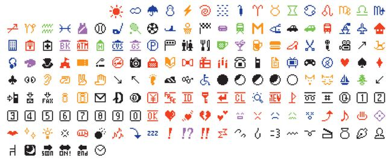

As emoticons became more and more popular, different companies began developing their own. This became a problem as the emojis were tied to the specific companies they were veloped by and so rights issues and all prevented them from being used cross-platform. As a result, in 2007 a team lead by Google decided to petition the Unicode Consortium to officially recognize emoji.
The Unicode Consortium is a nonprofit organization that works to maintain text standards across devices. Initially, computers all had varying types of text standards, meaning different types of computers didn't interpret certain symbols a certain way. This is why Unicode was introduced, so there would be an international and official recognized text standard. In 2009 a group from Apple submitted an official proposal to have 625 emoji characters adopted into the Unicode Standard, as they realized that emoji had become too popular to ignore and had become its own language. In 2010, Unicode accepted the proposal and emoji become more widely accessible, paving the way for it to become the hit it is now.